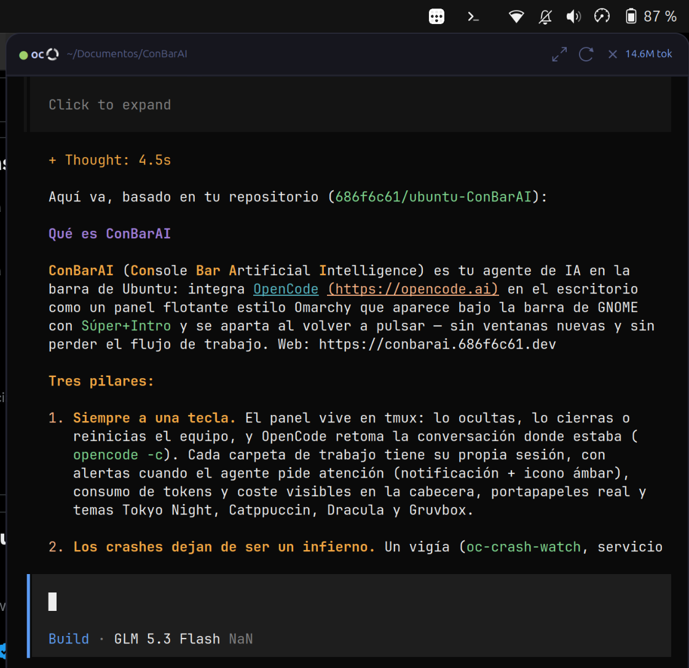
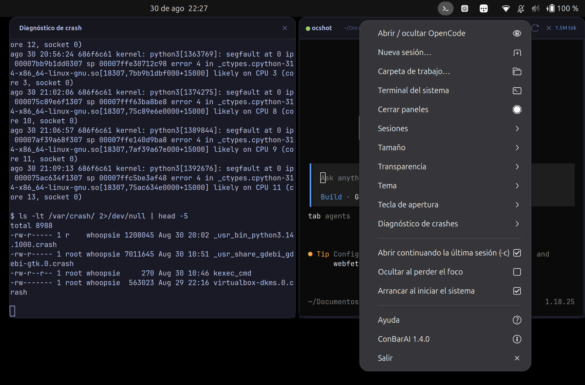
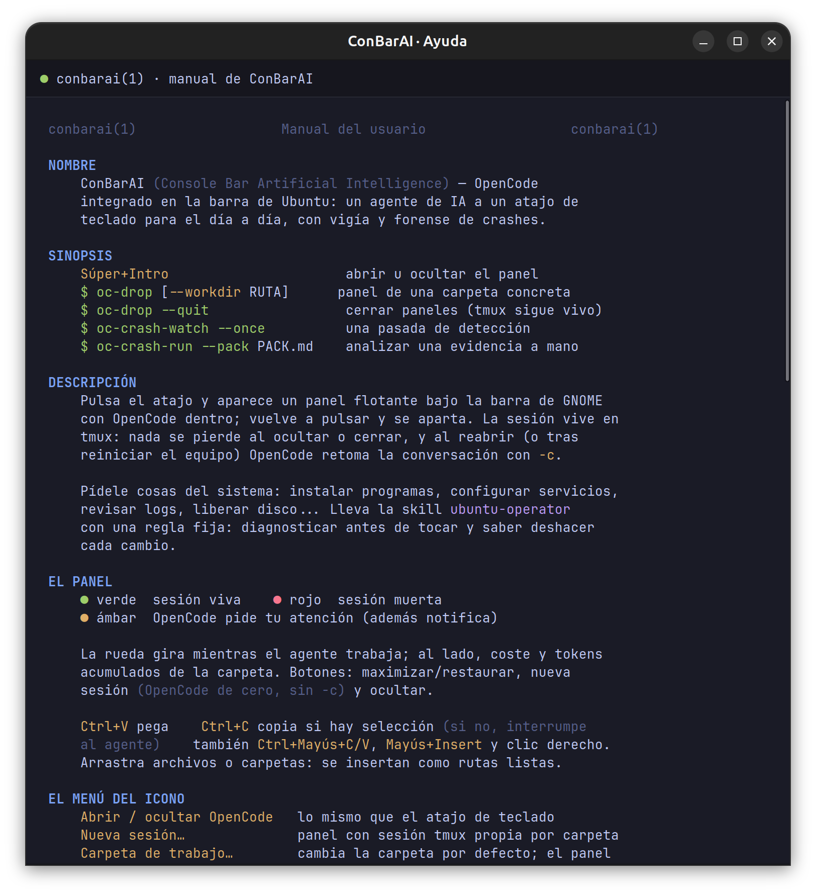

$
██████╗ ██████╗ ███╗ ██╗██████╗ █████╗ ██████╗ █████╗ ██╗ ██╔════╝██╔═══██╗████╗ ██║██╔══██╗██╔══██╗██╔══██╗██╔══██╗██║ ██║ ██║ ██║██╔██╗ ██║██████╔╝███████║██████╔╝███████║██║ ██║ ██║ ██║██║╚██╗██║██╔══██╗██╔══██║██╔══██╗██╔══██║██║ ╚██████╗╚██████╔╝██║ ╚████║██████╔╝██║ ██║██║ ██║██║ ██║██║ ╚═════╝ ╚═════╝ ╚═╝ ╚═══╝╚═════╝ ╚═╝ ╚═╝╚═╝ ╚═╝╚═╝ ╚═╝╚═╝
Console Bar Artificial Intelligence · OpenCode en la barra de Ubuntu
Tu agente de IA a una tecla.
Y los crashes, de infierno a informe.
Pulsa Súper+Intro y un panel flotante aparece bajo la barra de GNOME con OpenCode dentro; vuelve a pulsar y se aparta. Sin ventanas nuevas, sin perder el flujo. Y cuando algo revienta en tu sistema, ConBarAI lo detecta, lo analiza con IA en modo solo lectura y te entrega la causa y el arreglo.
Por qué ConBarAI
conbarai(1)❯ Siempre a una tecla
El panel vive en tmux: ocúltalo, ciérralo o reinicia el equipo — OpenCode sigue ahí y retoma la conversación donde estaba (opencode -c). Cada carpeta de trabajo tiene su propia sesión.
❯ Crashes sin infierno
Averiguar por qué murió un programa significa bucear en journals, dmesg y volcados. ConBarAI lo hace por ti: detecta, analiza con IA y entrega un informe con causa probada y arreglo reversible.
❯ Tuyo y local
Corre en tu espacio de usuario, sin sudo y sin telemetría. El análisis va con permisos de solo lectura y la IA es tu propio OpenCode. Nada del sistema se toca sin que lo pidas.
El panel
Súper+Intro
- Multi-sesión: un panel por carpeta (sesiones tmux oc, oc-<carpeta>), con menú de sesiones y carpetas recientes.
- Consumo a la vista: tokens y coste de la carpeta en la cabecera, leídos de la base de datos de OpenCode en modo solo lectura.
- Portapapeles de verdad: Ctrl+V pega; Ctrl+C copia si hay selección (si no, interrumpe al agente, como en cualquier terminal); arrastra archivos y se insertan como rutas.
- Alertas: cuando OpenCode pide atención suena una notificación y el icono pasa a ámbar.
- 4 temas (Tokyo Night, Catppuccin, Dracula, Gruvbox), 4 tamaños, 3 opacidades y JetBrains Mono Nerd autodetectada.
Crashes: de infierno a informe
oc-crash-watch- Un vigía lee el journal del kernel (servicio de usuario systemd, sin sudo): segfaults, OOM-kills, resets de GPU, tareas colgadas y reinicios inesperados. Dedupe por programa y mute individual.
- Te avisa con una notificación y guarda la evidencia en ~/.local/state/oc-drop/crash/.
- Un agente con permisos de SOLO LECTURA analiza (lista cerrada de comandos de diagnóstico; edición y red denegadas) y escribe el informe: qué pasó · evidencia · causa (probado vs inferido) · arreglo con reversión · cómo evitarlo.
- Panel a la vista: análisis en directo en una consola al lado o debajo. Panel oculto: el informe se genera igual en segundo plano y se anuncia al acabar.

# Informe de crash · snap-store (segfault) 1. Qué pasó — snap-store (PID 1241357) murió por SIGSEGV, con un fallo de acceso dentro de libgobject-2.0. 2. Evidencia — kernel: snap-store[1241357]: segfault at 58875dc49157 ip 000075c19c222d06 error 4 in libgobject-2.0.so.0.8400.4 3. Causa probable — PROBADO: lectura de un puntero salvaje con la IP en el mecanismo de señales de GObject. INFERIDO: uso tras liberar durante un refresh de snap en caliente; episodio único, no un bucle. 4. Arreglo — reabrir; si se repite, sudo snap refresh snap-store (reversión: sudo snap revert snap-store). 5. Cómo evitarlo — no dejarlo abierto durante un snap refresh.
Manual integrado
man conbarai
- Cada entrada del menú, explicada.
- Cada atajo de teclado del panel.
- Cada comando de terminal (oc-drop, oc-crash-watch, oc-crash-run).
- Cada clave de settings.json con sus rangos y valores.
- Dónde vive cada cosa: ajustes, informes, mutes, skill.
Instalación
install.sh$ git clone https://github.com/686f6c61/ubuntu-ConBarAI.git $ cd ubuntu-ConBarAI $ ./install.sh [1/7] Dependencias del panel [OK] Todas presentes (7) [2/7] Terminal del sistema [OK] Ghostty detectado [3/7] OpenCode [OK] OpenCode en el PATH [4/7] Tipografía JetBrains Mono [OK] Ya instalada [5/7] Carpeta de trabajo [OK] ~/Documentos/ConBarAI [6/7] Enlaces, skill y ajustes [OK] Binarios en ~/.local/bin [7/7] Vigía de crashes [OK] Vigía ACTIVO [OK] ConBarAI v1.4.0 instalado
- Interactivo: ofrece instalar dependencias con apt, Ghostty, OpenCode (instalador oficial) y la tipografía; pregunta la carpeta de trabajo.
- Requisitos: GNOME en Wayland (la ventana usa XWayland), python3-gi + VTE + AppIndicator, tmux, opencode en el PATH y usuario en el grupo adm (el de Ubuntu por defecto) para el vigía.
- Reversible: ./uninstall.sh lo retira todo, con confirmación, y conserva tus otros atajos de teclado.
Ajustes
~/.config/oc-drop/settings.json| clave | valores | qué hace |
|---|---|---|
| workdir | ruta | carpeta de trabajo por defecto (vacío = ~/Documentos/ConBarAI) |
| width · height | 0.15-0.90 · 0.20-0.95 | tamaño del panel como fracción de la pantalla |
| opacity | 0.50-1.00 | opacidad de todo el panel |
| theme | tokyo-night · catppuccin · dracula · gruvbox | tema de color |
| font · font_size | auto · 7-16 | tipografía (auto = JetBrains Mono Nerd) y cuerpo |
| keybinding | <Super>Return · <Super>a · "" | atajo global de apertura |
| terminal | auto · binario | terminal del sistema (auto = Ghostty si está) |
| autohide · autostart | true · false | ocultar al perder el foco; tray al iniciar sesión |
| continue_session | true · false | arrancar OpenCode con -c (retoma la conversación) |
| diag_pos | side · below | consola de diagnóstico al lado o debajo del panel |
| crash_watch · crash_analyze | true · false | vigía de crashes; análisis con IA |
| crash_poll · crash_dedupe | segundos | cadencia del vigía (8); dedupe por programa (60) |